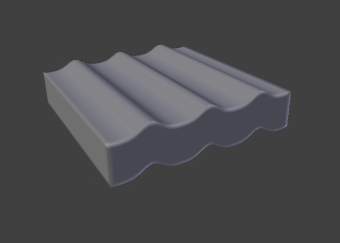
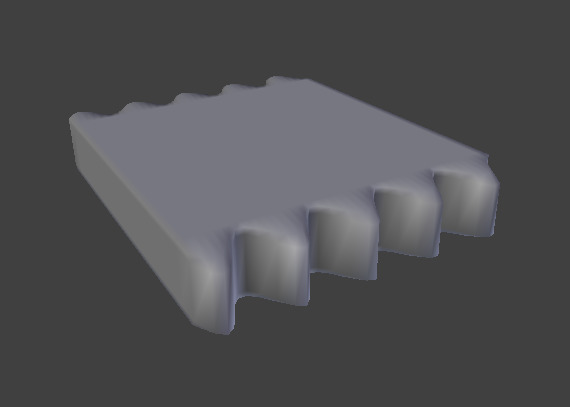

波浪修改器¶
The Wave Modifier adds a ripple-like motion to an object's geometry.
This modifier is available for meshes, lattices, curves, surfaces and texts.

Circular wave front. |

Linear wave front. |

X轴开启运动，Y轴开启法线。 |
{kind=link}
{kind=link}
选项¶
Wave Modifier.
运动¶
- Axis
The wave effect deforms vertices/control points in the Z direction, originating from the given starting point and propagating along the object with circular wave fronts (if both X and Y are enabled), or with rectilinear wave fronts (if only one axis is enabled), then parallel to the axis corresponding to the X or Y button activated.
X、Y轴
- 循环
- 重复波周期，而不是单个脉冲。
- 法线
- 网格
时间¶
用来控制动画的设置选项。
- 偏移量
- 在帧中的时间偏移量。波开始的帧 (如果 * 速度 * 为正)，或结束 (如果 * 速度 * 为负)。使用负帧数作准备，然后预启动波。
- 生命
- 动画时长，以帧为单位。设置为0则表示动画一直循环下去。
- 阻尼
- 额外数量的帧，波从 高度 值慢慢衰减到0直到 生命 终结。衰减发生在所有的波纹身上，起始于 生命 终结后开始的第一帧。 衰减 帧过后后波纹消失。
位置¶
- 位置
在物体局部坐标系中波的中心坐标
X、Y轴
- 衰减
- 随着坐标上（或者这些 起始位置物体）的移动，控制波消退的快慢。
- 物体的开始位置
- 用另一个物体给波的起始位置作参考。注意到你可以让该物体的位置动起来，以此随时间改变波的原点。
Delimiter & Noise¶
- 顶点组
- For meshes only. A vertex group name, used to control the parts of the mesh affected by the wave effect, and to what extent (using vertex weights). Note a newly created vertex group has empty weights
- 纹理
使用该纹理来控制物体的位移程度。动画纹理用在这里可能产生有趣的效果。
- 纹理坐标
该菜单让你选择置换的纹理坐标
- 局部
- 物体的局部坐标。
- 全局
- 全局坐标
- 物体
- 在下面添加额外的场，填上获取纹理坐标的物体的名字
- UV
- Adds an extra UV map property, to select the UV map to be used.
Arguments¶
The arguments of the wave function.
- 速度
- 波纹的速度，以BU（即Blender单位）为单位。
- 高度
- 波纹的高度或振幅x2，以BU（即Blender单位）为单位。
- 宽度
- Half of the width, in BU, between the tops of two subsequent ripples (if Cyclic is enabled). This has an indirect effect on the ripple amplitude. If the pulses are too near to each other, the wave may not reach the zero Z-position, so in this case Blender actually lowers the whole wave so that the minimum is zero and, consequently, the maximum is lower than the expected amplitude. See 技术细节和提示 below.
- 窄度
- The actual width of each pulse: the higher the value the narrower the pulse. The actual width of the area in which the single pulse is apparent is given by 4/ Narrowness. That is, if Narrowness is 1 the pulse is 4 units wide, and if Narrowness is 4 the pulse is 1 unit wide.
Important
上面描述的所有值必须乘以物体的实际尺寸所对应的*缩放*值。
技术细节和提示¶
上面值的关系描述如下：

波前特征
To obtain a nice wave effect similar to sea waves and close to a sinusoidal wave, make the distance between following ripples and the ripple width equal; that is, the Narrowness value must be equal to 2/ Width. E.g. for Width to be 1, set Narrow to 2.